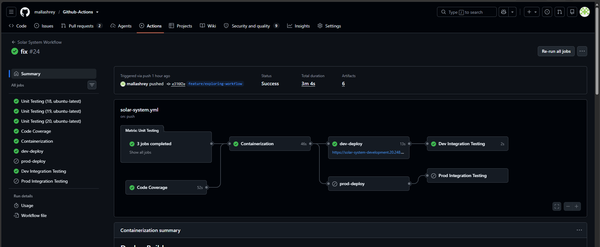
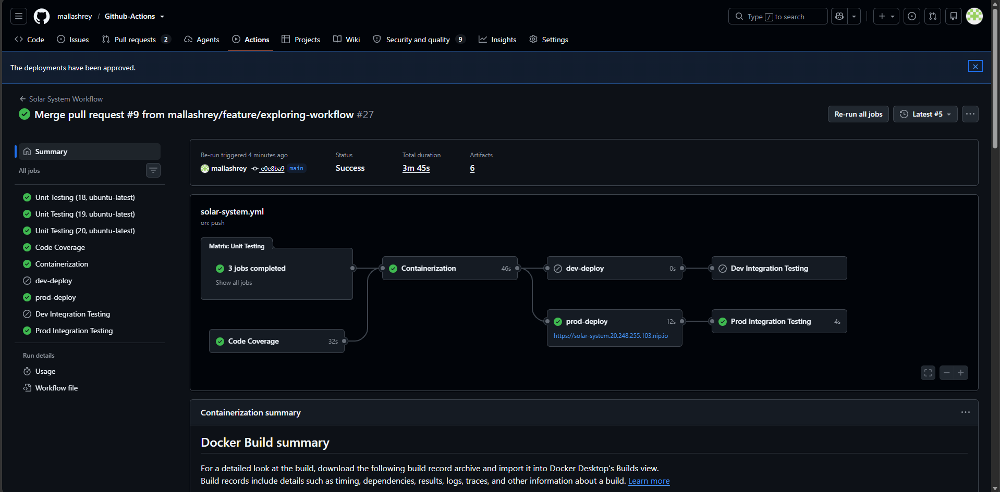
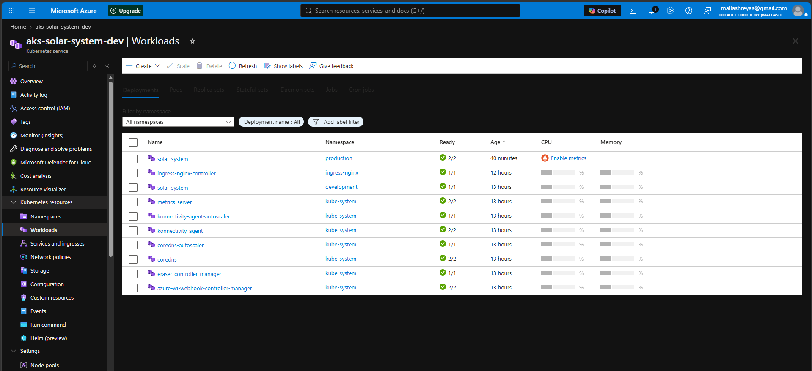
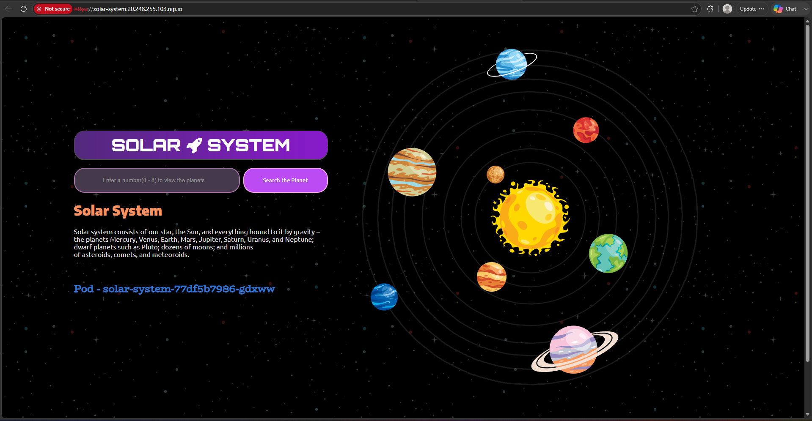
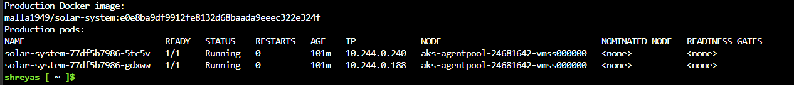

DevOps Project · Microsoft Azure
Multi-Environment CI/CD on Azure Kubernetes Service
An end-to-end GitHub Actions pipeline that tests, containerises and deploys a Node.js application to development and production environments in Azure Kubernetes Service.
This link opens the live application when the Azure AKS cluster is active. The cluster is currently stopped to minimise hosting costs.
Project Overview
From source change to verified deployment
This project demonstrates a complete CI/CD workflow rather than only building a Docker image.
Feature-branch changes run automated tests
and deploy to the
development namespace. After
the change is reviewed and merged into
main, the workflow prepares
the production release.
The production deployment uses a protected
GitHub Environment. The workflow pauses
until the release is manually approved
before deploying into the
production namespace.
Both environments run in Azure Kubernetes Service and use NGINX Ingress to route external traffic to the application.
Architecture
Application delivery flow
GitHub Source
Code is pushed to a feature branch and reviewed before merging into main.
Quality Gates
Unit tests run against Node.js 18, 19 and 20, alongside code coverage.
Container Image
Docker images are built and tagged using the Git commit SHA.
AKS Deployment
Feature branches deploy to development. Main deploys to production after approval.
Integration Test
GitHub Actions calls the externally routed
/live endpoint.
Pipeline Design
Automated workflow stages
Matrix Unit Testing
Executes automated tests across Node.js versions 18, 19 and 20.
Code Coverage
Measures application test coverage and publishes workflow artifacts.
Containerisation
Builds Docker images and publishes versioned images to container registries.
Development Deployment
Feature-branch changes deploy automatically to the development namespace.
Production Approval
The protected production environment requires manual approval before deployment.
Integration Testing
Verifies the deployed application through its externally accessible health endpoint.
Release Strategy
Development and production separation
| Source Event | Target | Control | Validation |
|---|---|---|---|
Push to feature/*
|
development namespace
|
Automatic after CI succeeds |
Development
/live test
|
Merge or push to
main
|
production namespace
|
Manual GitHub Environment approval |
Production
/live test
|
Protected production deployment
A successful main-branch build does not deploy immediately. The production job pauses until the deployment is reviewed and manually approved.
Kubernetes Implementation
AKS resources
Deployments
Manage application replicas and rolling updates in development and production.
Services
ClusterIP Services expose the Node.js application internally on port 3000.
NGINX Ingress
Routes external traffic from the Azure Load Balancer to the correct Kubernetes Service.
Repository structure
.github/workflows/solar-system.yml
Dockerfile
kubernetes/
├── development/
│ ├── deployment.yaml
│ ├── service.yaml
│ └── ingress.yaml
└── production/
├── deployment.yaml
├── service.yaml
└── ingress.yamlDeployment Evidence
Pipeline and AKS results
Permanent evidence from the completed CI/CD pipeline and Azure Kubernetes Service deployment.
Development CI/CD Pipeline

A feature-branch workflow completing matrix unit testing, code coverage, containerisation, development deployment and integration testing. The production jobs remain skipped because the workflow was triggered from a feature branch.
Approved Production Deployment

The main-branch workflow after its protected production environment was manually approved. The production deployment and post-deployment integration test both completed successfully.
Healthy AKS Workloads

Azure AKS running the Solar System application in separate development and production namespaces. The NGINX Ingress Controller and supporting Kubernetes services are also healthy.
Deployed Application

The containerised Solar System application served through the production NGINX Ingress. The pod name displayed by the application confirms that the response was generated by a Kubernetes pod.
Commit-to-Deployment Verification

The production Kubernetes Deployment uses a Docker image tagged with the Git commit SHA. The same image is running across two healthy production pods in Azure AKS. This provides traceability from the GitHub commit and workflow run to the container image deployed in Kubernetes.
Security Controls
Securing the delivery process
Security controls protect application credentials, separate deployment environments and prevent unapproved production releases.
- Sensitive MongoDB passwords are stored as GitHub Secrets rather than committed to source control.
- Kubernetes Secrets provide application credentials to the running containers.
- Production deployment uses a protected GitHub Environment with manual approval.
- Development and production workloads are separated using Kubernetes namespaces.
- Docker images use immutable commit-based tags for deployment traceability.
- GitHub Actions runs automated tests before any environment deployment begins.
Project Outcome
Skills demonstrated
The completed project connects source control, testing, container delivery, Kubernetes deployment and operational verification through a controlled release process.
- Branch-aware multi-environment deployments
- Azure Kubernetes Service administration
- Docker image creation and SHA-based tagging
- Automated unit and integration testing
- Manual production release approval
- Kubernetes Ingress and external routing